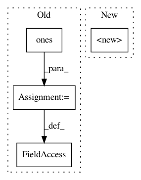

21445b6052f3b1ce1a1210ff6d402dd0ad71be0a,geomstats/geometry/special_euclidean.py,_SpecialEuclideanMatrices,__init__,#_SpecialEuclideanMatrices#Any#,85
Before Change
self.n = n
self.dim = int((n * (n + 1)) / 2)
translation_mask = gs.hstack([
gs.ones((self.n,) * 2), 2 * gs.ones((self.n, 1))])
translation_mask = gs.concatenate(
[translation_mask, gs.zeros((1, self.n + 1))], axis=0)
self.translation_mask = translation_mask
self.lie_algebra = SpecialEuclideanMatrixLieAlgebra(n=n)
self.left_canonical_metric = \
SpecialEuclideanMatrixCannonicalLeftMetric(group=self)
After Change
def __init__(self, n):
super().__init__(
n=n + 1, dim=int((n * (n + 1)) / 2), default_point_type="matrix",
lie_algebra=SpecialEuclideanMatrixLieAlgebra(n=n))
self.rotations = SpecialOrthogonal(n=n)
self.translations = Euclidean(dim=n)
self.n = n
In pattern: SUPERPATTERN
Frequency: 4
Non-data size: 4
Instances
Project Name: geomstats/geomstats
Commit Name: 21445b6052f3b1ce1a1210ff6d402dd0ad71be0a
Time: 2020-11-17
Author: nicolas.guigui@inria.fr
File Name: geomstats/geometry/special_euclidean.py
Class Name: _SpecialEuclideanMatrices
Method Name: __init__
Project Name: bashtage/linearmodels
Commit Name: 6207c7c0ddfbaf9147e3217af57ff448245ead86
Time: 2017-04-07
Author: kevin.k.sheppard@gmail.com
File Name: linearmodels/panel/model.py
Class Name: PanelOLS
Method Name: __init__
Project Name: jalola/improved-wgan-pytorch
Commit Name: fc8951bbd36b14099e41fe171ab57e9f3937fe4f
Time: 2018-05-08
Author: waterstorm64@gmail.com
File Name: models/wgan.py
Class Name: LayerNorm
Method Name: __init__
Project Name: bashtage/linearmodels
Commit Name: 6361ad4ed147964b65b5ba5ffc4a1a68d7f3f281
Time: 2020-01-23
Author: kevin.k.sheppard@gmail.com
File Name: linearmodels/panel/model.py
Class Name: PooledOLS
Method Name: __init__